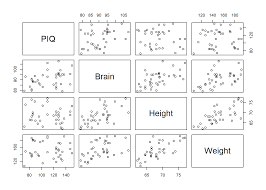

Model višestrukih linearnih regresija je statistički model za procjenu odnosa između neprekidnog cilja i prediktora.
Prediktori mogu biti neprekidni, kategorijski ili izvedena polja pa su prema tome podržani i ne-linearni odnosi. Model je linearan ako se sastoji od članova koji se zbrajaju, gdje je svaki član prediktor koji se množi s procijenjenim koeficijentom. Konstantni član (sjecište) se također obično dodaje modelu.
Linearna regresija se koristi za generiranje uvida iz grafikona koji sadrže najmanje dva neprekidna polja od kojih je jedno identificirano kao cilj, a drugo kao prediktor. Dodatno, kategorijski prediktor i dva pomoćna neprekidna polja mogu se specificirati u grafikonu i koristiti za generiranje odgovarajućeg regresijskog modela. Za svaki model koji je kandidat, IBM®Cognos Analytics izvodi F test značajnosti modela.

Prilagođavanje i testiranje modela
Višestruki linearni model se prilagođava putem sljedećih koraka:
- Konstruirajte matricu dizajna koja sadrži jedan red za svaki red podataka i jedan stupac za svaki parametar u modela regresije. Stupci odgovaraju prediktorima ili kategorijama prediktora.
-
Izračunajte koeficijente regresije
- Pomnožite matricu dizajna s transponiranom matricom dizajna.
- Pomnožite transponiranu matricu dizajna s vektorom ciljnih vrijednosti.
- Pomnožite inverznu matricu iz koraka a s matricom iz koraka b.
Pomoću dobivenih koeficijenata regresije izračunajte predviđene ciljne vrednosti za svaki red podataka. Razlike između predviđenih i opaženih ciljnih vrednosti se zovu reziduali. Zatim se testira značajnost modela pomoću F testa na sledeći način.
- Izračunajte kvadrat srednje vrednosti za izvor pogreške (neobjašnjena varijanca)
- Izračunajte zbroj kvadrata za reziduale.
- Podelite zbroj kvadrata za svaki izvor pogreške s odgovarajućim stupnjevima slobode.
- Izračunajte kvadrat srednje vrijednosti za regresijski model (objašnjena varijanca).
- Izračunajte zbroj kvadrata za model.
- Podelite zbroj kvadrata za regresijski model s odgovarajućim stupnjevima slobode.
- Podelite kvadrat srednje vrednosti za regresijski model s kvadratom srednje vrednosti za izvor greške. Drugim rečima, izračunajte omer objašnjene varijance prema neobjašnjenoj varijanci. Ovaj omjer je F vrednost.
F vrednost se uspoređuje s teoretskom F distribucijom da bi se utvrdila verovatnost slučajnog dobijanja F vrednosti.
Ta verovatnost predstavlja vrednost značaja.
Ako je vrednost značaja manja od razine značaja, tada su srednje vrednosti značajno različite.
Prilagođeni R2 se koristi za procjenu prediktivne snage regresijskog modela. Za razinu značajnosti se stavlja 5% i prediktivna snaga modela mora biti veća od 10% da bi se pokazao pouzdan prediktivni odnos između ciljnog i ulaznog polja.
Izbor modela
Postupak izbora modela zavisi o tome je li prisutan kategorijski prediktor ili ne. Ako je naveden samo neprekidni prediktor, tada se razmatraju sledeća tri modela.
- Konstantni model koji uvijek predviđa ukupnu srednju vrijednost.
- Linearni model u kojem se jedan prediktor dodaje konstanti.
- Kvadratni model u kojem se kvadratni prediktor dodaje linearnom modelu.
Kvadratni model se bira ako je značajan i ako pruža relativno poboljšanje prediktivne snage od najmanje 10% u odnosu na linearni model. Ako je izabran, dobijete krivulju kvadratne aproksimacije zajedno s prediktivnom snagom modela.
U suprotnom, bira se linearni model ako zadovoljava iste uvete u usporedbi s konstantnim modelom. Ako je izabrana, dobijete krivulju linearne aproksimacije zajedno s prediktivnom snagom modela.
Ako nije izabran nijedan od prethodnih modela. Dobijete ukupnu srednju vrednost i nećete dobiti predviđeni odnos između cilja i ulaza.
Ako je prisutan kategorijski prediktor, tada je proces izbora složeniji jer se razmatra do odam različitih modela. Koraci izbora su slični prethodno navedenim koracima jer se bira najsloženiji model koji je značajan i pruža dovoljno relativnog poboljšanja u odnosu na prvi ugneždeni model.
Za izabrani model dobijete prediktivnu snagu kao i odgovarajuće linije aproksimacije zavisno o modelu i broju kategorija u kategorijskom prediktoru koji je izabran i ako je uopšte izabran. Broj kategorija u kategorijskom prediktoru je ograničen na 3, kako bi se smanjio broj prikazanih linija aproksimacije.